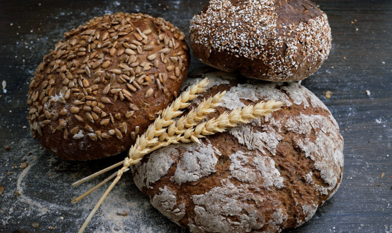
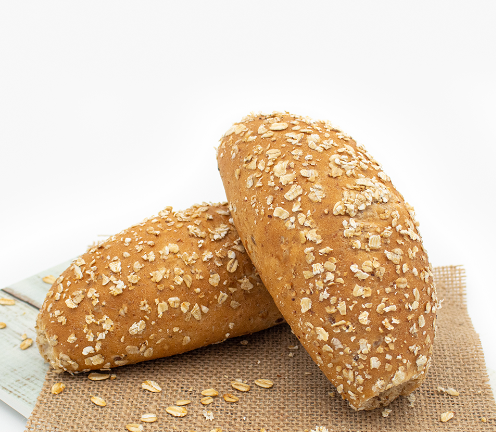
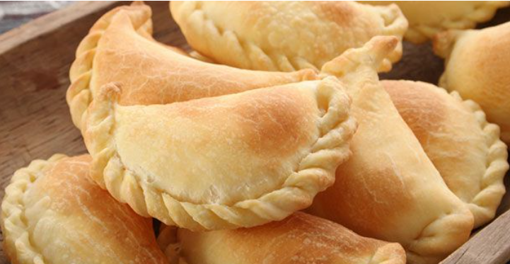

|  |
Pão de CenteioDescrição: O nosso pão de centeio é conhecido pelo seu sabor autêntico e pela sua crosta crocante. Perfeito para acompanhar as suas refeições ou fazer deliciosos sanduíches. Ingredientes: Farinha de centeio, água, sal, fermento. |
|  |
Pão IntegralDescrição: O nosso pão integral é rico em fibras e saudável. Ideal para aqueles que procuram uma opção mais nutritiva. Ingredientes: Farinha integral, água, sal, fermento. |

|
BagueteDescrição: A nossa baguete é famosa pela sua crosta crocante e pelo seu interior suave. Perfeita para acompanhar refeições ou fazer lanches. Ingredientes: Farinha de trigo, água, sal, fermento. |

|
Torta de MaçãDescrição: A nossa torta de maçã é uma deliciosa combinação de maçãs frescas, canela e uma base de massa crocante. Perfeita para a sobremesa ou lanche. Ingredientes: Maçãs frescas, canela, açúcar, farinha, manteiga, ovos. |

|
Rosquinha de ChocolateDescrição: As nossas roscas de chocolate são fofas e cobertas com uma cobertura de chocolate suave. Ideais para satisfazer o seu desejo por chocolate. Ingredientes: Farinha, cacau em pó, açúcar, leite, ovos, chocolate para a cobertura. |

|
Éclair de BaunilhaDescrição: Nossos éclairs de baunilha são recheados com creme de baunilha e cobertos com uma camada de chocolate. Um prazer doce para qualquer momento do dia. Ingredientes: Farinha, leite, ovos, baunilha, chocolate, creme de baunilha. |

|
Empadas de CarneDescrição: Nossas empadas de carne são recheadas com carne moída temperada com especiarias. Uma deliciosa opção para um almoço rápido. Ingredientes: Carne moída, cebola, pimentão, especiarias, massa de empada. |

|
Empadas de FrangoDescrição: Nossas empadas de frango são recheadas com suculenta carne de frango e vegetais, temperados à perfeição. Ingredientes: Carne de frango, cebola, pimentão, azeitonas, massa de empada. |
|  |
Empadas de QueijoDescrição: Nossas empadas de queijo são uma delícia recheada com queijo derretido e uma massa crocante. Perfeitas como aperitivo ou lanche. Ingredientes: Queijo, cebola, pimentão, massa de empada. |